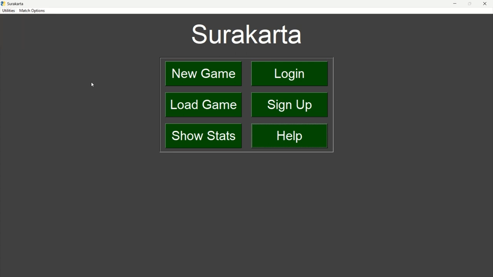
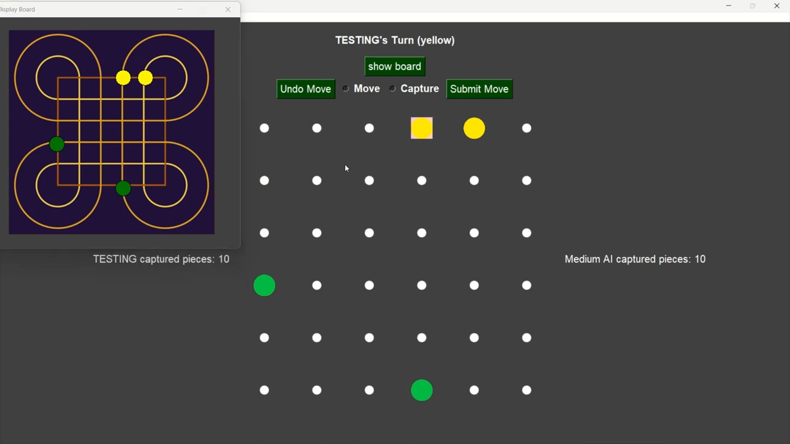
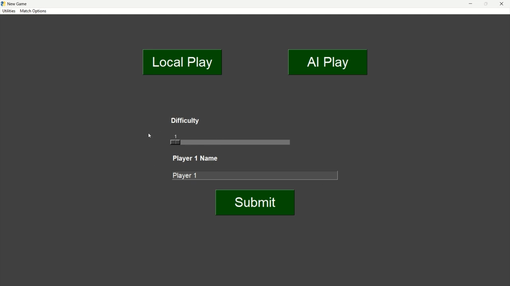
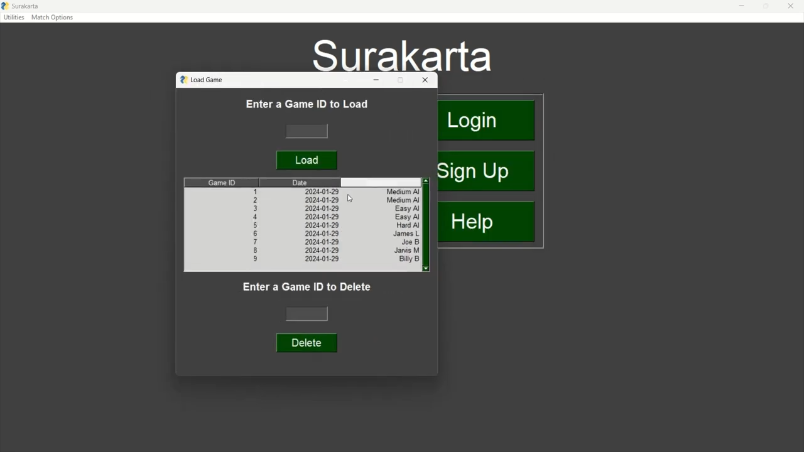

In this project, I used python to create the ancient Indonesian board game "Surakarta". There are very few digital versions of the game so I created a version that brought together features scattered between different versions and implemented new functionality too.
One of the most complex parts of the project was designing and implementing an algorithm to determine the legality of a capturing move because of the game's unique "piece skating" mechanic. My algorithm used doubly-ended circular lists to store the board's looped tracks.
I also created a variable difficulty AI opponent using the Monte Carlo Tree Search algorithm which I found to outperform minimax due to the game's very high branching factor.
User Features:
Technical Features:
You can find my full project report below which scored 74/75 at A-level.



